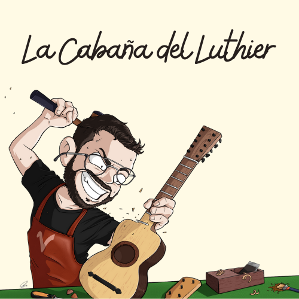
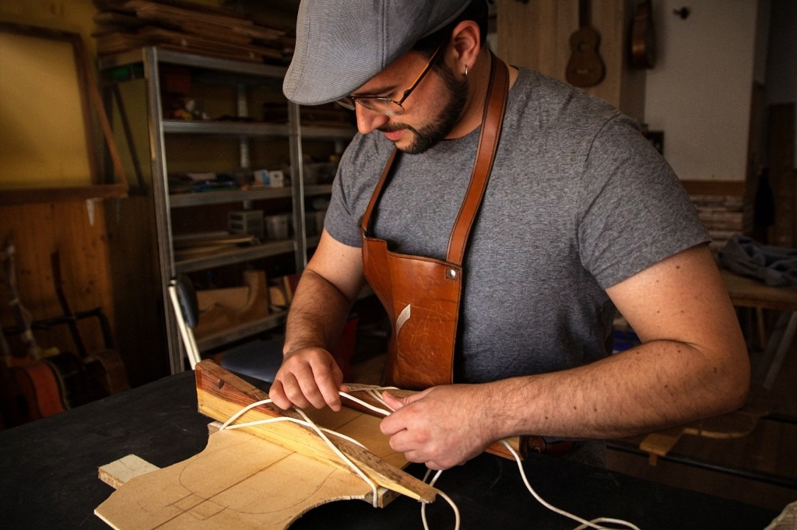

Juan Busquiel
Un encuentro con el luthier Juan Busquiel: oficio, trayectoria y visión de la construcción artesanal.
Podcast · Vael de Ginés
Conversaciones sobre luthería, artesanía y música. Un espacio para escuchar a quienes construyen, reparan y piensan los instrumentos desde dentro del taller.

Sobre el podcast
La cabaña del luthier nace con la idea de abrir el taller y compartir conversaciones con luthiers, músicos y artesanos.
En cada episodio hablamos de maderas, técnicas, herramientas, historia del instrumento y de la vida alrededor de un oficio que se transmite de persona a persona. Sin prisa y sin guion cerrado.
Puedes escucharlo mientras trabajas en el taller, vas en coche o preparas la siguiente pieza. Si tienes una propuesta o te gustaría participar, escríbeme.

Grabado en el taller · Los Alcázares
Episodios
Un encuentro con el luthier Juan Busquiel: oficio, trayectoria y visión de la construcción artesanal.
Todo lo que conviene saber sobre el mecanismo que sostiene la afinación del instrumento.
Descubriendo la maestría de Juliana Hernández en «La Cabaña del Luthier».
El luthier canario nos habla de su trabajo, su taller y su manera de entender el oficio.
Un capítulo especial para celebrar los días internacionales de la artesanía.
Exploramos los misterios del Tetraclinis articulata, una madera ligada a nuestra tierra.
Con IMS Strings, entramos en el proceso de fabricación de las cuerdas que dan voz al instrumento.
Nos sumergimos en el universo del timple canario de la mano de Pedro Izquierdo.
El legado del maestro almeriense que transformó la guitarra española para siempre.
Una conversación sobre el oficio, la amistad y la transmisión del conocimiento.

Hablemos de tu proyecto
Si eres luthier, músico o artesano y crees que tu trabajo merece una conversación, escríbeme. El podcast también se construye con las propuestas de quien escucha.